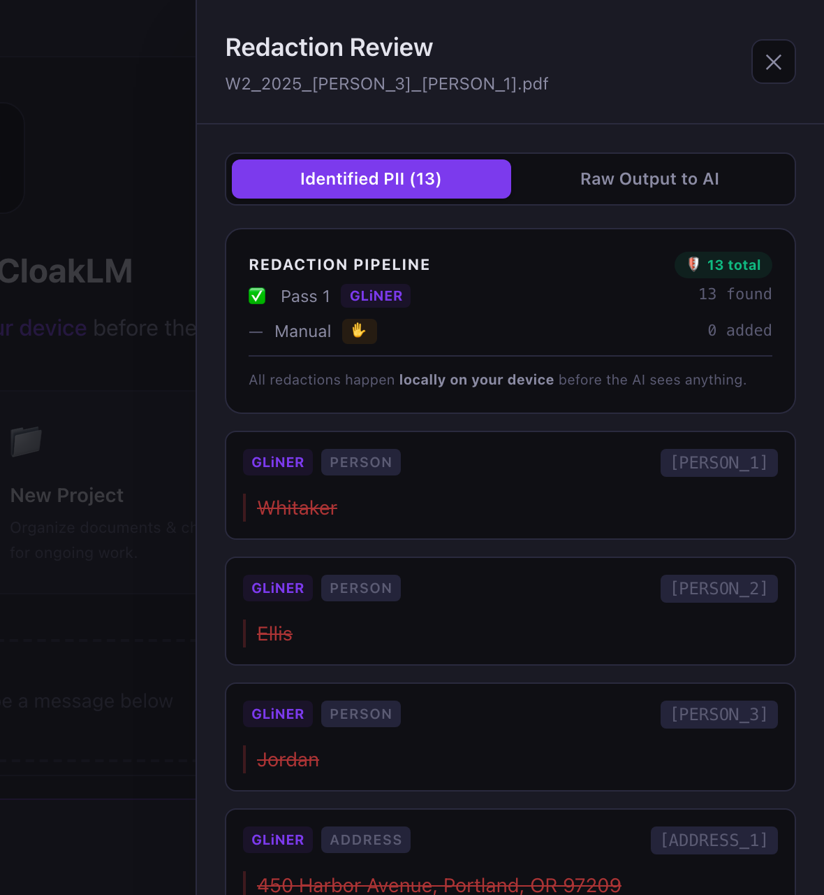

How to Redact Your SSN From a PDF Before Using AI
Before you upload a tax form, pay stub, or medical bill to an AI tool, you’ll want your Social Security number gone. Not covered, gone. Those are different things, and the difference catches a lot of people.
Why a black box usually doesn’t work
Most PDFs store their text as real, selectable characters. When you draw a black rectangle over your SSN with a markup or shape tool, you add a new layer on top. The characters underneath are still in the file.
You can’t see the number, but software can. An AI chatbot reads the PDF’s text layer, not the picture, so it receives your full SSN. So does anyone who copies and pastes the page or searches the file. This is how redacted court filings and government documents have repeatedly leaked: the black boxes were only drawings.
Rule of thumb: if the tool you used is called “shape,” “highlight,” “markup,” or “annotate,” you covered the text. Only a tool that says redact, and makes you apply the redaction, actually removes it.
Method 1: Use a real redaction tool
A true redaction tool deletes the underlying text and leaves the black box in its place.
- Open the PDF in a tool with real redaction. Adobe Acrobat Pro has a dedicated Redact tool, and some other PDF editors offer one too. Look for wording like “permanently remove.”
- Mark everything that identifies you. On a W-2 that means your SSN (box a), your name and address (boxes e and f), and usually the employer’s EIN (box b). Search the whole document: SSNs often repeat on every copy of the form in a single PDF.
- Apply the redactions and save as a new file. Keep your original for your records.
- In Acrobat, also run Sanitize Document to strip hidden metadata, comments, and attachments.
Method 2: Print it to an image, then crop or cover
If you have no redaction tool, you can turn the page into a picture so there is no text layer left: take a screenshot of each page, cover the sensitive parts in an image editor, and save it as PNG or JPG. It works, but it’s tedious across several pages, and the AI then has to read the numbers back out of an image, which can introduce mistakes on a tax form.
Always verify: the two-minute check
Whatever method you used, test the result before you share it:
- Search for it. Open the redacted file and search (
Cmd+F/Ctrl+F) for the last four digits of your SSN. Zero results is what you want. - Copy everything out. Select all text on the page, copy, and paste into a plain text editor. If your SSN, name, or address shows up in the pasted text, the redaction failed, and an AI would have seen it.
Method 3: Skip the PDF editing entirely
If the reason you’re redacting is to ask an AI about the document, you don’t actually need a redacted PDF. You need the AI to receive text without your identity in it. That’s what CloakLM does: you drop in the original PDF, and it detects SSNs, names, addresses, EINs, emails, and phone numbers on your computer, replacing each with a placeholder like [SSN_REDACTED] or [PERSON_1].

Your original file is never modified, dollar amounts stay intact, and the “Raw Output to AI” view does the verification step for you: it shows the exact text that will be sent. When the AI replies, real names are restored on your screen only. It’s free and open source, and works with Claude, GPT, Gemini, or fully offline with Ollama.
Quick summary
| Method | Removes the text? | Best for |
|---|---|---|
| Black box / markup | No | Nothing; avoid |
| Real redaction tool | Yes | PDFs you’ll share with people |
| Screenshot + cover | Yes | One-off pages, no tools |
| Local anonymizer (CloakLM) | Yes, before sending | Asking AI about your documents |
Related: Is it safe to upload your W-2 to ChatGPT?
Chat with your documents, not your identity
CloakLM is free and open source for Mac and Windows.
Download CloakLM